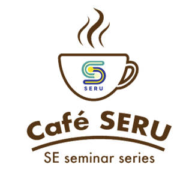
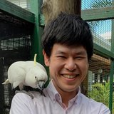

Café SERU
Café SERU is our seminar series. We invite researchers in software engineering and related fields to share their work with students and colleagues at the Faculty of ICT, Mahidol University.
Café SERU is coming back
The series has been quiet since August 2024 and is now restarting. New talks will appear at the top of this page and on our Facebook page. To give a talk or suggest a speaker, write to us at morakot.cho@mahidol.ac.th.
Send your suggestion to morakot.cho@mahidol.ac.th. Please include the speaker's name, affiliation, and talk topic.
Past talks
Twelve talks from June 2019 to August 2024, newest first. Titles and affiliations are as they were at the time of each talk.
-
On Privacy Weaknesses and Vulnerabilities in Software Systems
Dr. Pattaraporn Sangaroonsilp, Faculty of ICT, Mahidol University, Thailand
Abstract and speaker bio
Abstract
In this digital era, our privacy is under constant threat as our personal data and traceable online/offline activities are frequently collected, processed and transferred by many software applications. Privacy attacks are often formed by exploiting vulnerabilities found in those software applications. The Common Weakness Enumeration (CWE) and Common Vulnerabilities and Exposures (CVE) systems are currently the main sources that software engineers rely on for understanding and preventing publicly disclosed software vulnerabilities. However, our study on all 922 weaknesses in the CWE and 156,537 vulnerabilities registered in the CVE to date has found a very small coverage of privacy-related vulnerabilities in both systems, only 4.45% in CWE and 0.1% in CVE. These also cover only a small number of areas of privacy threats that have been raised in existing privacy software engineering research, privacy regulations and frameworks, and relevant reputable organisations. The actionable insights generated from our study led to the introduction of 11 new common privacy weaknesses to supplement the CWE system, making it become a source for both security and privacy vulnerabilities.
About the speaker
Pattaraporn Sangaroonsilp is a lecturer and a member of the Software Engineering and Business Analytics (SEBA) research cluster at the Faculty of ICT, Mahidol University, Thailand. Her research interests primarily lie in the intersection of privacy and data protection in software engineering, as well as privacy weaknesses and vulnerabilities in software systems. Previously, she was a PhD candidate and a member of the Decision Systems Lab (DSL) at the University of Wollongong, Australia. She holds a master's degree in Advanced Computer Science and Information Technology Management from the University of Manchester, UK, and a bachelor's degree in Information and Communication Technology, with a major in Management Information Systems, from the Faculty of ICT, Mahidol University.
-
Uncovering Hidden Challenges: Designing Data-Driven Solutions for Real-World Software Engineering
Dr. Patanamon Thongtanunam, The University of Melbourne, Australia
Abstract and speaker bio
Abstract
In the age of AI, a plethora of automated software engineering solutions has been proposed to enhance developer productivity and expedite the software engineering workflow. However, despite significant progress in addressing common software engineering problems, many practical challenges remain overlooked, leaving a considerable gap in supporting practitioners in overcoming these issues. This talk will delve into a series of studies conducted by our research team, showcasing how we uncover challenges embedded within real-world software practices and design data-driven solutions. Specifically, the talk will focus on key areas in software engineering practices: agile planning, code reviews, and continuous integration (CI). By aiming to better align innovations with real-world problems, we aim to pave the way towards effective and pragmatic solutions for software engineering practices.
About the speaker
Dr. Patanamon (Pick) Thongtanunam is a Senior Lecturer and a course coordinator of the Master of Software Engineering program at the School of Computing and Information Systems, The University of Melbourne, Australia. Prior to that, she was a lecturer at the School of Computer Science, at the University of Adelaide, Australia, and a research fellow at Queen’s University, Canada. She received PhD and Master of Engineering degrees from Nara Institute of Science and Technology, Japan, and received a Bachelor of Computer Engineering degree from Kasetsart University, Thailand. Pick’s research interests include empirical software engineering, data mining, and data-driven techniques to support software engineering tasks. Her primary research goals are directed towards uncovering empirical evidence, extracting knowledge from data recorded in software repositories, and developing automated approaches to support developers. She published most of her works at high-standing software engineering publication venues including IEEE Transactions on Software Engineering (TSE). Her research work and endeavors have received numerous prestigious awards including an Australian Research Council (ARC) Discovery Early Career Research Award (2021 – 2024), Japan Society for the Promotion of Science Research Fellowship (2016 – 2018), ACM SIGSOFT Distinguished Paper award, IEEE Computer Society TCSE Distinguished Paper Award, as well as distinguished reviewer awards at the top-tier international software engineering conferences including the International Conference on Software Engineering (ICSE). She currently serves as a board member on the editorial board of the ACM Transactions on Software Engineering and Methodology (TOSEM) and a steering committee of the IEEE/ACM International Conference on Mining Software Engineering (MSR).
-
Interpretable Decision Tree Ensemble Learning with Abstract Argumentation for Binary Classification
Junior Assoc. Prof. Dr. Teeradaj Racharak, Japan Advanced Institute of Science and Technology (JAIST), Japan
with summer interns Runchana Seesung, Siranut Akarawuthi, and Nitit NgamphotchanamongkolAbstract and speaker bio
Abstract
We marry two powerful ideas: decision tree ensemble for rule induction and abstract argumentation for aggregating inferences from diverse decision trees to produce better predictive performance and intrinsically interpretable than state-of-the-art ensemble models. Our approach called Arguing Tree Ensemble is a self-explainable model that first learns a group of decision trees from a given dataset. It then treats all decision trees as knowledgeable agents and lets them argue with each other to conclude a prediction. Unlike conventional ensemble methods, this proposal offers full transparency to the prediction process. Therefore, AI users are able to interpret and diagnose the prediction’s output.
About the speaker
Teeradaj Racharak is a Senior Lecturer (Junior Associate Professor) at the School of Information Science, Japan Advanced Institute of Science and Technology (JAIST), and runs ReaLearn (the Reasoning & Learning for Trustworthy AI laboratory) at JAIST. Before JAIST, he was a software and DevOps engineer, involved in the development of large-scale web applications including MangaMagazine.net and Inkblazers. He is broadly interested in mathematical modeling and implementation of AI. He specializes in logic and machine learning, particularly in Description Logic, Computational Argumentation, and Deep Learning. He has a diverse educational background and work experience in universities and software industries. His research interests (but are not limited to) span across: Knowledge Representation and Reasoning (KRR) for Explainable AI, Machine Learning (ML) and its applications, and Integration of KRR and ML for Robust and Explainable AI.
Student talks
The three summer 2023 internship students at JAIST will also present their research projects on the following topics:
- Runchana Seesung, Why are They Similar? Let's Explain via Description Logics
- Siranut Akarawuthi, Virtual Knowledge Graph with Explainable Similarity Reasoning
- Nitit Ngamphotchanamongkol, Large language model for Argumentation Mining from Text
-
Effort Estimation for a Reliable Sprint Planning in Agile Iterative Development
Dr. Jirat Pasuksmit, The University of Melbourne, Australia
Abstract and speaker bio
Abstract
Software development teams adopt Agile methodologies to respond to rapidly-changing business needs. In Agile Iterative Development (e.g., Scrum), a software development team plans, implements, and delivers software increments in iterations of 2-4 weeks (i.e., sprints in Scrum). During sprint planning, the team estimates the size of the work to be done to allocate just-enough workload for the short sprints. To estimate the effort, the team relies on an estimation method based on the team consensus (e.g., experts’ opinion, Planning Poker). However, such a method is prone to be inaccurate, which could lead to a waste of team effort in re-planning and huge revenue loss in the IT industry. This presentation will discuss the common reasons for inaccurate estimations, the potential impact of unreliable estimations, and suggestions for practitioners towards a reliable effort estimation and sprint planning.
About the speaker
Jirat Pasuksmit is a Ph.D. candidate in Software Engineering at the School of Computing and Information Systems, The University of Melbourne, Australia. He received his B.Sc. in Computer Science from the School of Information and Technology, King Mongkut’s University of Technology Thonburi, Thailand. Prior to commencing his Ph.D. study, he was a software engineer for four years. His research interests include Agile software development, empirical software engineering, and effort estimation in Agile.
-
Toxic Code on Stack Overflow
Assoc. Prof. Dr. Jens Krinke, University College London, UK
Abstract and speaker bio
Abstract
Software developers use Stack Overflow to interact and exchange code snippets and researchers use Stack Overflow to harvest code snippets for use with recommendation systems. However, code on Stack Overflow may have quality issues, such as security or license problems. In this talk, I will present our work on how users of Stack Overflow perceive such issues, how we studied the problem of outdated code and potential license violations, and how code on Stack Overflow is non-compliant with coding style and full of security problems. The prevalence of such toxic code may not only affect projects in which such code is used, but also may affect mining or machine learning tasks using Stack Overflow as a code base.
About the speaker
Jens Krinke is an Associate Professor in the Software Systems Engineering Group at the University College London, where he is Director of CREST, the Centre for Research on Evolution, Search, and Testing. His main focus is software analysis for software engineering purposes. His current research interests include software similarity, modern code review, program analysis, and software testing. He is well known for his work on program slicing and clone detection.
-
Characterizing the Quality of Third-party libraries through Runnability and Risk Assessment in the Open Source Ecosystem
Dr. Bodin Chinthanet, Nara Institute of Science and Technology, Japan
Abstract and speaker bio
Abstract
Third-party library usage becomes the important part of software development within the open source community. These library packages provide software developers with useful features without the need to reinvent the wheel. with each package often depending on several others. Since there are millions of packages available online, the understanding of the package quality is needed for choosing the suitable package in the software development project. This research project characterizes the package quality through (1) the package selection and (2) the package security risk. The first part of this project finds how to choose the good package from user and contributor perspectives through the developer survey and the analysis of package runnability. The results show that both users and contributors share similar views on how to assess the package quality. Runnability of the package could be used for choosing the good package. The second part of this project investigates the risk of vulnerability in the package through the vulnerability fix adoption analysis and the code-centric vulnerability detection. The results show that lags of the fix adoption are affected by factors (i.e., severity and freshness). Additionally, most of the vulnerable codes are not reachable in the application.
About the speaker
Bodin Chinthanet is a specially appointed assistant professor at Nara Institute of Science and Technology, Japan. He received a Ph.D. from Nara Institute of Science and Technology in 2021. His research interests include empirical software engineering and mining software repositories. In detail, his research is focusing on the security vulnerabilities in software ecosystems, how developers react to vulnerabilities in their software projects. His ultimate goal is to mitigate the risk of security vulnerabilities in software ecosystems.
-
Not Teaching Software Engineering Standard to Future Software Engineers - Malpractice?
Prof. Claude Y. Laporte, École de technologie supérieure, Montréal, Canada
Abstract and speaker bio
Abstract
Software engineering standards are essential sources of codified knowledge for all software engineers. Could the professors who are not teaching software engineering standards to software engineering students be accused of malpractice?
About the speaker
Claude Y Laporte, PhD is an Adjunct Professor of Software Engineering at École de technologie supérieure (Montréal, Canada).
-

Software Documentation and Software Economics for Knowledge Sharing
Asst. Prof. Dr. Hideaki Hata, Shinshu University, Japan
Abstract and speaker bio
Abstract
Traceability between knowledge/information and its implementation is essential in software maintenance. Pieces of source code are connected with external resources, such as Stack Overflow threads, discussions of issues, academic papers for algorithms. These external resources are sometimes mentioned in source code comments. From our empirical studies on software documentation, we have observed some issues including link decay, obsolete knowledge, etc. Since knowledge and information is not limited to single software development projects, these issues are spreading over software ecosystems. To address these challenges, we are considering economic mechanisms, similar to bug bounty programs. This talk will explore our previous findings and our current and future challenges.
About the speaker
Hideaki Hata is an Associate Professor at the Faculty of Engineering, Shinshu University. His research interests include software ecosystems, human capital in software engineering, and software economics. He received a Ph.D. in information science from Osaka University. More details of his work can be found at https://hideakihata.github.io/.
-
Artificial Intelligence and Software Engineering (AI4SE and SE4AI)
Asst. Prof. Dr. Hoa Khanh Dam, University of Wollongong, Australia
Abstract and speaker bio
Abstract
As software products become pervasive in all areas of our society, building high-quality software in a productive manner becomes crucial to the software industry. The rise of Artificial Intelligence (AI) is potentially a game changer in improving software quality, accelerating productivity and increasing project success rates. This talk will discuss how AI can provide the capabilities to assist software engineering teams in many aspects, from automating routine tasks to providing project analytics and actionable recommendations, and even making decisions (AI for Software Engineering). This talk will also explore some of the new challenges for software engineering in developing large scale AI-based systems (Software Engineering for AI).
About the speaker
Hoa Khanh Dam is Associate Professor in the School of Computing and Information Technology, University of Wollongong (UOW) in Australia. He is Associate Director for the Decision System Lab at UOW, heading its Software Analytics research program. His research interests lie primarily in the intersection of Software Engineering and Artificial Intelligence (AI). He develops AI solutions for project managers, software engineers, QA and security teams to improve software quality/cybersecurity and accelerate productivity. His research also focuses on methodologies and techniques for engineering autonomous AI multi-agent systems. More details of his work can be found at https://www.uow.edu.au/~hoa/.
-
New Trends in Software Engineering
SERU students, Faculty of ICT, Mahidol University, Thailand
About this session
About this session
This is a special seminar for our 4th year students who are going to present their work at the 10th International Workshop on Empirical Software Engineering in Practice (IWESEP 2019). Their work are the results from their summer internship at the SE lab at Nara Institute of Science and Technology (NAIST) and University of Bremen that tackle important and emerging trends in software engineering.
The four talks
- Noppadol Assavakamhaenghan, Software Team Member Configurations: A Study of Team Effectiveness in Moodle
- Tattiya Sakulniwat, Visualizing the Usage of Pythonic Idioms Over Time: A Case Study of the with open Idiom
- Vara Arammongkolvichai, Improving Clone Detection Precision using Machine Learning Techniques
- Thanadon Bunkerd, How Do Contributors Impact Code Naturalness? An Exploratory Study of 50 Python Projects
-
Interpretable Artificial Intelligence
Dr. Teeradaj Racharak, Japan Advanced Institute of Science and Technology (JAIST), Japan
Abstract and speaker bio
Abstract
Interpretable artificial intelligence (IAI) refers to techniques which can be trusted and easily understood by humans. Unlike the concept of ‘black box’, IAI can be used to implement a social right to explanation i.e. to explain why an AI arrives to a specific decision. A technical challenge of explaining AI decisions is known as the interpretability problem. One possible approach for handling it is to carefully design and develop AI w.r.t. formal syntax and semantics. In this talk, we will introduce the basics of computational logic (the notions of syntax, semantics, and proof theory) and its relationship to knowledge representation formalisms. We will also investigate the standard inferences and relate their computations to the transparency of AI decisions.
About the speaker
Teeradaj Racharak is an assistant professor in the field of artificial intelligence at Japan Advanced Institute of Science and Technology (JAIST). Prior to that, he did his Ph.D. in description logic under the supervision of professor Satoshi Tojo and his master in logic programming under the supervision of professor Phan Minh Dung. Apart from his studies in computational logic, he is an open-minded software engineer and interested in many things related to artificial intelligence and software development methodologies. His research interest is centered on formal development toward human intelligence i.e. how a machine can ‘learn’ and ‘reason’ like a human? In particular, he has been studying to address the following research areas: (1) machine learning, (2) computational logic, and (3) their applications to natural language understanding.
-
The future of software defect prediction and software quality
Dr. Chakkrit Tantithamthavorn, Monash University, Australia
Dr. Patanamon Thongtanunam, The University of Melbourne, AustraliaAbstracts and speaker bios
Chakkrit Tantithamthavorn, abstract
With the rise of software systems ranging from personal assistance to nation’s facilities, software defects become more critical concerns as they can cost millions of dollar as well as impact human lives. Yet, at the breakneck pace of rapid software development settings (like Agile/DevOps paradigm), the Quality Assurance (QA) practices nowadays are still time-consuming. Currently, I’m leading a research program to develop AI to predict future software defects and explain why they are defective in order to optimize the limited QA resources and develop the most effective quality improvement plans. This research project is expected to provide significant benefits including the reduction of software defects and operating costs, while accelerating development productivity.
About Chakkrit Tantithamthavorn
Dr. Chakkrit (Kla) Tantithamthavorn is an Assistant Professor in Faculty of Information Technology, Monash University, Melbourne, Australia (a research-intensive university in the World’s Top 100 Universities). His current research focuses on Explainable AI in Software Engineering. His work has been published at top-tier software engineering venues, such as IEEE Transactions on Software Engineering (TSE), Empirical Software Engineering (EMSE), and the International Conference on Software Engineering (ICSE). Please contact me if you want to do world-class research on the development of AI technologies to improve software quality and productivity.
Patanamon Thongtanunam, abstract
Software is a byproduct of human activities. To strive for the successful completion of a software product, software development requires deep collaboration and interactions among software practitioners, especially for globally-distributed software development teams. Due to the continuously growing size of development teams and software products, collaboration management becomes a crucial concern. For example, poor collaboration in software development processes may lead to poor software quality. However, good practices still remains an elusive goal. Therefore, Dr Thongtanunam’s research focuses on incorporating various sources of development activities, gleaning actionable insights for software engineering management, and providing tool support for software practitioners with the aim of improving software quality. In this talk, Dr Thongtanunam will present her empirical studies which highlight the impact of code review practices on software quality and discuss some of her proposed tool support (e.g., a reviewer recommendation algorithm).
About Patanamon Thongtanunam
Dr Patanamon Thongtanunam is a lecturer at School of Computing and Information Systems (CIS), the University of Melbourne (The number 1 university in Australia and Top 32 university in the world). Her primary research goals are directed towards data-driven software engineering, i.e., uncovering empirical evidence and extracting knowledge from data recorded in software repositories by using statistical analysis. Her research has been published at top-tier software engineering venues like International Conference on Software Engineering (ICSE) and Journal of Empirical Software Engineering (EMSE). More about Dr Thongtanunam and her work is available online at http://patanamon.com.